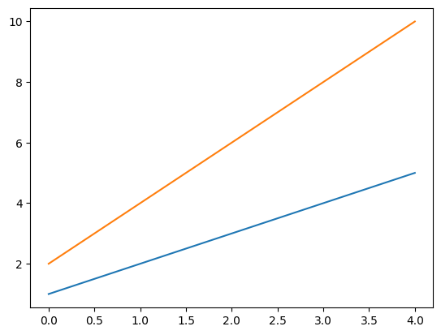

泰勒连续展开公式（Taylor Series Expansion）是数学中用于表示一个函数在某一点附近的一个无穷级数展开。这个公式是以英国数学家布鲁克·泰勒（Brook Taylor）的名字命名的。泰勒级数的基本思想是用一个函数在某一点附近的各阶导数值来代替该函数，从而得到一个关于变量的无穷级数表达式。
import altair as altimport pandas as pdimport matplotlib.pyplot as plt# 创建一个简单的数据集data = pd.DataFrame({'x': [1, 2, 3, 4, 5],'y': [2, 4, 6, 8, 10]})# 创建一个散点图chart = alt.Chart(data).mark_circle().encode( x='x:Q', y='y:Q')# 显示图表# chart.show()plt.plot(data)plt.show()

import matplotlib as mplimport matplotlib.pyplot as pltimport numpy as npplt.rcParams["font.sans-serif"] = ["SimHei"] mpl.rcParams['axes.unicode_minus'] =False# 正常显示负号# zhfont=mpl.font_manager.FontProperties(fname="/System/Library/Fonts/PingFang.ttc")# mpl.rcParams['axes.unicode_minus'] = Falsex=np.linspace(-np.pi,np.pi,100)y=np.sin(x)plt.title(u'正弦函数')plt.plot(x,y)plt.show()
# import altair with an abbreviated aliasimport altair as alt# print(alt.Config)# alt.renderers.set_embed_options(base_url='js/',vega_url='js/vega@5',# vega_lite_url='js/vega-lite@4',# vega_embed_url='js/vega-embed@6')# 算了吧太费劲了，放弃altair# alt.renderers.enable('html', base_url='js')# load a sample dataset as a pandas DataFramefrom vega_datasets import datacars = data.cars()# alt.renderers.enable('html', vega_cdn='https://cdnjs.cloudflare.com/libraries/vega', vega_lite_cdn='https://cdnjs.cloudflare.com/libraries/vega-lite')# https://cdnjs.cloudflare.com/ajax/libs/vega-embed/6.26.0/vega-embed.min.js# make the chartalt.Chart(cars).mark_point().encode( x='Horsepower', y='Miles_per_Gallon', color='Origin',).interactive()